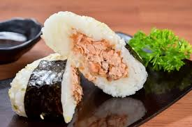

Salmon Onigiri
Back to Homepage

This recipe is courtesy of Marc Matsumoto of No Recipes
Ingredients
- salmon
- salt
- sake
- Japanese short-grain rice
- Sheets of nori seaweed
Preparation
- Step 1: Preparing the salmon
-
The day before you want to make your onigiri, cure the salmon by setting it on a baking sheet lined with paper towels.
The paper towels will help drain off any liquid the salmon releases. Sprinkle about a teaspoon of salt evenly over the
surface of the fish.
The salted salmon can be kept in the fridge for up to 3 days.
- Step 2: Cooking the salmon
-
When you're ready to cook the salmon, place it skin-side down in a non-stick frying pan.
Add two tablespoons of sake, cover the pan with a lid, and turn the heat on to medium-high.
Once the sake reaches a rolling boil, lower the heat to sustain a gentle simmer.
Set a timer for three minutes. Steaming the salmon ensures a uniformly tender and fluffy
texture while the sake infuses the fish with umami.
- Step 3: De-boning the salmon
-
When the timer is up, transfer the salmon to a clean surface.
When it's cool enough to handle, peel off the skin and remove any pin bones.
Now, use your fingers to gently flake the salmon apart.
If you want finer flakes, you can rub the flakes between your fingertips to crumble them up even more.
- Step 4: Assembling the onigiri
-
To make the salmon onigiri, cut a sheet of plastic wrap in front of you and sprinkle on a pinch of salt.
This will lightly salt the exterior of the onigiri.
Heap a mound of cooked rice into the center of the wrap and make a small well in the center.
Add a generous helping of your salmon flakes into the hole, and cover it with another layer of rice.
- Step 5: Forming the onigiri
-
To form the onigiri, lift the bottom edge of the plastic wrap and fold it over the rice.
Bring the top corners down over the rice to make a triangular bundle. Shape one hand like a "U" and place the bundle of rice in it.
Shape the other hand like a "V" and press your hands together to lightly compress the rice.
The hallmark of a great onigiri is in the delicate balance of pressure that's enough to hold its shape but not so much that it
becomes dense and heavy.
Another option is to use a plastic onigiri mold which will make these easier to shape.
- Step 6: Adding nori
-
As for the nori strips, I'd recommend wrapping your salmon rice balls when you plan to eat it.
This ensures the seaweed remains crisp, creating a delightful textural contrast with the soft rice and moist salmon.
Just drape the nori strip, shiny side out, around the back of the onigiri like you're putting a blanket over its shoulders and fold the edges over, pressing them gently into the rice.